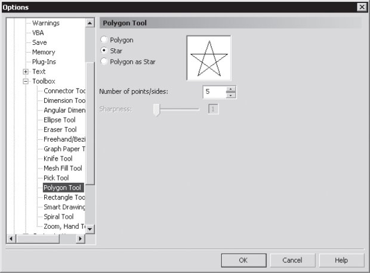

Лекция 12: Настройка программы
Функциональная настройка
Под функциональной настройкой мы будем понимать изменение режима работы программы таким образом, чтобы она функционировала наиболее надежно, быстро и корректно.
Оптимизация работы с памятью
CorelDRAW предоставляет пользователю широкие возможности, однако при этом требует много ресурсов, в частности оперативной и дисковой памяти. Об этой проблеме стоит задуматься уже на этапе установки, когда вы решаете, на какой диск устанавливать программу и на каком будет находиться папка для хранения временных файлов. Если дисковое пространство позволяет, создайте такую папку на пустом логическом диске объемом не меньше 1 Гбайт. Это не только обеспечит достаточное количество места для CorelDRAW, но и позволит быстро находить и удалять временные файлы после некорректного выхода из программы.
После того как программа установлена, потратьте несколько минут на настройку ее работы с памятью. Для этого выполните команду Tools \Rightarrow Options (Сервис \Rightarrow Параметры) и в открывшемся окне выберите страницу Workspace/Memory (Рабочее пространство/Память) (рис. 12.1).
В области Swap Disks (Диски подкачки) укажите два диска, пространство которых будет использоваться для создания файлов подкачки — временных файлов, позволяющих более эффективно работать с оперативной памятью. Лучше всего выбрать максимально пустые и дефрагментированные диски.
В области Memory Usage (Использование памяти) определите, какая часть оперативной памяти (в процентах от общего количества, установленного на компьютере) будет зарезервирована для CorelDRAW.
Если вы собираетесь параллельно работать в других ресурсоемких программах, например в Adobe Photoshop, лучше оставить значение по умолчанию — 25%. Если другие приложения не будут выполняться, отведите для CorelDRAW больше памяти — 65–75%. Не устанавливайте 100% — это может привести не к ускорению работы, а к частым конфликтам и зависанию компьютера.
Флажок Enable Compression (Разрешить сжатие) позволяет использовать данные в оперативной памяти в сжатом виде. С одной стороны, это увеличивает эффективность использования оперативной памяти и уменьшает частоту обращения к жесткому диску, с другой — дополнительно нагружает процессор и создает предпосылки для возникновения программных ошибок. Поэтому общая рекомендация такова: если у вашего компьютера достаточно большой объем оперативной памяти (более 256 Мбайт) и не слишком производительный процессор (например, Celeron c тактовой частотой 450 МГц и ниже), флажок Enable Compression (Разрешить сжатие) лучше снять.
Рис. 12.1. Страница Workspace/Memory (Рабочее пространство/Память) диалогового окна Options (Параметры)
ВНИМАНИЕ.Установки вступят в силу после перезагрузки программы.
После оптимизации общего количества доступной памяти стоит подумать о том, как использовать ее наиболее эффективно. Для этого откройте страницу Workspace/ General (Рабочее пространство/Общие) диалогового окна Options (Параметры) (рис. 12.2).
В данном случае нас больше всего интересует поле Regular (Регулярный) области Undo levels (Количество откатов), в котором задается максимальное количество операций, отменяемых командой Edit \Rightarrow Undo (Правка \Rightarrow Откат). Большое значение этого параметра позволяет работать спокойно, с полной гарантией того, что вы всегда сможете вернуться при редактировании на большое количество действий назад. Однако стоит учесть, что слишком большое количество откатов будет занимать оперативную память (пусть даже в виде временных файлов на жестком диске).
К тому же, как показывает опыт, редко приходится возвращаться назад более чем на 20–30 шагов, поэтому достаточно будет указать значение 50.
Рис. 12.2. Страница Workspace/General (Рабочее пространство/Общие) диалогового окна Options (Параметры)
Безопасность работы
В диалоговом окне Options (Параметры) откройте страницу Workspace/Save (Рабочее пространство/Сохранение) (рис. 12.3).
В области Auto-Backup (Автоматическое резервное копирование) можно установить такой режим работы, при котором через определенные промежутки времени на жестком диске будет создаваться копия текущего состояния редактируемого документа. Это повышает надежность работы, но требует некоторого времени на выполнение резервного копирования. Если вы работаете со сложными документами, насыщенными растровой графикой, кривыми с очень большим количеством узлов, флажок Auto-backup every (Автоматическое резервное копирование) лучше снять, особенно на медленном компьютере, ведь не очень удобно, когда каждые полчаса программа внезапно замирает на несколько минут.
Лучше не забывать сохранять файл вручную как можно чаще, особенно после окончания каждого этапа редактирования документа. А вот флажок Make backup on save (Создавать резервную копию при сохранении) не раз спасал авторов от случайного удаления важных документов.
Рис. 12.3. Страница Workspace/Save (Рабочее пространство/Сохранение) диалогового окна Options (Параметры)
В диалоговом окне Options (Параметры) есть еще одна страница, связанная с безопасностью работы — Global (Общие). На ней присутствует всего один параметр — Enable CARM (Разрешить CARM). CARM (Corel Application Recovery Manager) — это специальная программа, которая активизируется, когда CorelDRAW начинает работать нестабильно. CARM предлагает вам сохранить документ, закрыть программу и отослать отчет о сбое в Corel Corporation. Последнее вряд ли актуально, но как своеобразный "тревожный сигнал" CARM можно использовать.
12.2. Настройка цвета
CorelDRAW — графический пакет, поэтому корректность отображения графики на экране играет для этой программы определяющую роль. Речь идет прежде всего о калибровке цвета. Главная задача калибровки — обеспечить соответствие изображения на вашем экране и на носителе заказчика. Носителем может быть как экран, так и бумага или иной материал для печати. В первом случае речь может идти о подготовке изображений для Web, во втором — о подготовке к печати. Сегодня для решения обеих задач используются цветовые конфигурации (Profiles) — специальные таблицы для описания цветов цветового пространства, например RGB-пространство монитора NEC или CMYK-пространство принтера Epson. Когда одна конфигурация преобразуется в другую, цвета пересчитываются по определенным правилам. Общепринятым стандартом являются профили ICC (International Color Consortium, Международный консорциум по цветам). Для настройки цвета выберите команду Tools \Rightarrow Color Management (Сервис \Rightarrow Управление цветом). Откроется окно (рис. 12.4).
Рис. 12.4. Диалоговое окно Color Management (Управление цветом)
Под значком каждого цветового пространства указана соответствующая ему конфигурация. Лучше всего задать конфигурацию конкретного устройства. Например, в комплекте с любым современным монитором поставляется его цветовая конфигурация. Если устройство заранее не известно, можете воспользоваться конфигурацией, в названии которой есть слово "Generic". Для изменения конфигурации щелкните на значке в виде стрелки рядом с ее именем. Появится список готовых конфигураций, в котором нужно выбрать наиболее подходящее устройство.
Стрелки, соединяющие устройства, могут быть оранжевыми (активными) или серыми (неактивными). Активная стрелка означает, что между этими конфигурациями осуществляется пересчет цветов. Все стрелки не могут быть активными одновременно. Например, монитор может имитировать либо цвета принтера, либо цвета полиграфического оттиска. Щелчком на значке цветового пространства вызывается диалоговое окно с дополнительными установками. Если вы не чувствуете себя уверенно при задании цветовой конфигурации, можете выбрать один из стандартных наборов в списке Style (Стиль):
Optimized for desktop printing (Оптимизированный для офисной печати);
Optimized for professional printing/ (Оптимизированный для полиграфической печати);
Optimized for Web (Оптимизированный для Web).
12.3. Настройка интерфейса
Можно сказать, что в интерфейсе программы нет ни одного элемента, который нельзя настроить. Вы можете даже полностью перестроить интерфейс под стиль Adobe Illustrator. Для этого в диалоговом окне Options (Параметры) на странице Workspace (Рабочее пространство) установите флажок Adobe Illustrator. Панель графики и некоторые другие элементы интерфейса перестроятся соответствующим образом (рис. 12.5).

Рис. 12.5. Интерфейс CorelDRAW, имитирующий программу Adobe Illustrator
Кроме того, каждую панель инструментов, каждый инструмент и даже главное меню можно настроить индивидуально.
Настройка панелей инструментов
Рассмотрим, например, как настроить панель инструментов Text (Текст). Откройте в диалоговом окне Options (Параметры) страницу Workspace/Customization/Command Bars (Рабочее пространство/Настройка интерфейса/Панели инструментов) (рис. 12.6).
Рис. 12.6. Настройка панели инструментов
Установите флажок Text (Текст) в списке панелей. На экране появится панель в том виде, который определяется текущими настройками. Вы можете изменить эти настройки, и вид панели инструментов будет изменяться соответствующим образом:
Button (Кнопка) — размер кнопок;
Border (Рамка) — размер свободной области вокруг управляющих элементов панели инструментов;
Default Button Appearance (Вид кнопок) — можно выбрать один из вариантов:
Caption Below Image (Подписи под значками); Caption Only (Только подписи); Caption to Right of Image (Подписи справа от значков); Image Only (Только значки);
Show title when toolbar is floating (Показывать заголовок панели инструментов, когда она в "плавающем" состоянии);
Menu Bar Mode (Режим строки меню) — позволяет отдельно настраивать главное меню: File Mode (Файловый режим) — когда нет открытых файлов; Normal Mode (Обычный режим) — открыт хотя бы один файл.
Другие панели инструментов настраиваются по тому же принципу.
Настройка инструментов
Рассмотрим для примера настройки инструмента Polygon (Многоугольник). Откройте в диалоговом окне Options (Параметры) страницу Workspace/Toolbox (Рабочее пространство/Панель графики) и выберите пункт Polygon Tool (Инструмент Многоугольник) (рис. 12.7).
Рис. 12.7. Настройка инструмента Polygon (Многоугольник)
Здесь вы можете выбрать тип создаваемой фигуры, которая будет рисоваться данным инструментом по умолчанию: Polygon (Многоугольник), Star (Звезда) или Polygon as Star (Многоугольник-звезда).
Настройте другие параметры фигуры по умолчанию: Number of points/sides (Количество лучей/сторон) и Sharpness (Степень заострения). Выполнив все настройки, нажмите кнопку OK. После этого при помощи инструмента Polygon (Многоугольник) можно будет создавать фигуру с новыми параметрами. Тип параметров настройки зависит от выбранного инструмента.
ВНИМАНИЕ.О первых двух типах было рассказано в "Создание объектов" . Тип Polygon as Star (Многоугольник-звезда) означает звезду, стороны которой не пересекаются внутри фигуры. Чтобы превратить Polygon (Многоугольник) в Polygon as Star (Многоугольник-звезда), потяните инструментом Shape (Форма) за любой боковой узел многоугольника. Удерживайте нажатой клавишу Ctrl, чтобы заострение лучей происходило точно к центру.
СОВЕТ.Вызов параметров настройки многих инструментов можно осуществить двойным щелчком на панели графики.